← 返回阅读库 · 原论文目录
论文讲解阅读文档 · 内容生成 · v001
Contrastive Learning for Unpaired Image-to-Image Translation[2007.15651]
视频时长 00:17:20；讲解文字 8,247 字符；提取讲解画面 32 张。按视频原顺序阅读，每段文字保留时间戳。
文字来自整段视频的自动语音转写，按自然停顿分段，并与 PPT / 论文页面 / 演示画面对齐。未将讲解压缩为摘要；术语、数字和口述公式请结合画面及原论文核对。 阅读稿已校正规范部分明确术语误识别；原始逐字稿和每处修改记录另行保留。
讲解画面为源视频截图（640×360），不是可编辑 PPT 文件。全片按每秒 2 帧扫描内容变化，逐步展开页保留；连续动画保留代表画面。清晰度受源视频限制。
下载完整资料包 · 含离线 HTML、PDF、Word、全部 PPT 画面和字幕。
原论文与材料
Contrastive Learning for Unpaired Image-to-Image Translation · 下载完整 PDF（29 页）
按时间阅读
00:00:00–00:00:26 · 画面 001
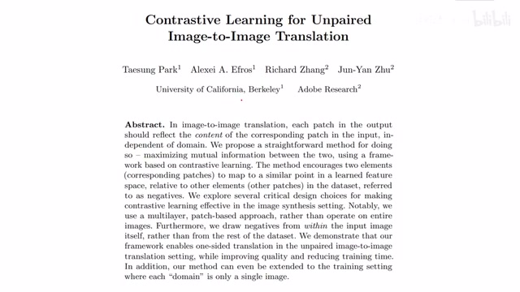
00:00:00–00:00:26 · 画面 001大家好,今天我们来快速梳理一篇论文 Contrastive Learning for Unpaired Image-to-Image Translation。那么这篇论文的核心思想就是我在用 GAN 做 Image Translation 的时候加入这个 Contrastive Learning 的元素，使用这个 Contrastive Loss 来让我们的图像的质量，特别是局部的图像的质量得到很好的增强，同时要求我们的网络在 Transfer 的过程中尽量保持同一个位置的语义信息的不变。
00:00:26–00:00:31 · 画面 002
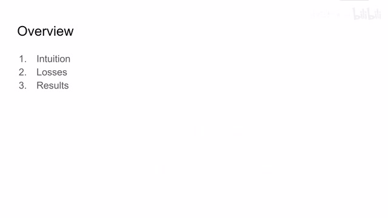
00:00:26–00:00:31 · 画面 002那么在今天的视频中呢，我们也就是主要讲一下它的这个 loss 是怎么设计的。那么这里我们来简单说一下本文的这个逻辑框架，这个呢是大家很熟悉的干做 image translation 的。那么从原始的图像然后到我们的目标 domain 的这个图像，我们过一个 generator 来转过去，然后呢这个产生的图像呢送到这个 discriminator 里面，discriminator 里面呢给我一个得分，然后呢通过这个得分呢把我们的这个 loss 呢给它向前优化过来。
00:00:31–00:01:36 · 画面 003
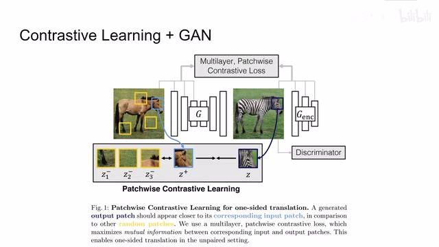
00:00:31–00:01:36 · 画面 003那么在此基础上呢，作者加入了这个 Multilayer Patchwise Contrastive Loss，它的核心的思路呢就是如你在这个图示中看到的一样，我们会在 Source Domain 和这个 Target Domain 的图像中呢，在不同的位置上选出不同的 Patch，那么相同位置上选出的 Patch 呢，它们应该是保持相似的语义信息，那它们之间的 Contrastive Loss 呢就应该相对的低，而不同的 Patch 之间呢，比如说像这个斑马的头和马身子啊，草地啊，马腿啊这种地方，它们包含的语义信息呢是不同的，所以在 transfer 之后呢，这个样本呢应该和这些样本远离。那么同样的呢，哪怕你是一个 Domain 里面的样本呢，不同位置之间它们也应该相互远离。那么这个呢就是本文的这个核心的思想，那么下面我们继续来看组织怎么样构建这个 Multilayer Patchwise Contrastive Loss。
00:01:36–00:01:37 · 画面 004
00:01:36–00:01:37 · 画面 00400:01:37–00:01:45 · 画面 005
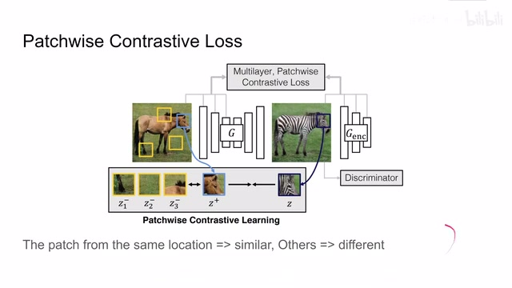
00:01:37–00:01:45 · 画面 00500:01:45–00:03:09 · 画面 006
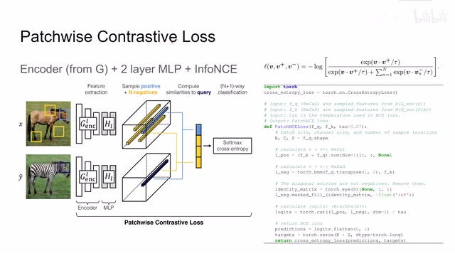
00:01:45–00:03:09 · 画面 006这 Contrastive Loss 的结构跟我们之前介绍的 SimCLR 它的结构是非常相似的，可以看到作者首先拿到了 InputImageX，然后我们通过 Generator 生成了它的 Translation 在 DomainY 里面的 Translation，我们这个叫 yhat，然后把这两幅图像一个是作为 key，一个是作为 query，把它送进我们的 Contrastive Learning 的框架里面，这里我们在图像中采不同的 patch。
那把这些 patch 呢送到我们的 encoder 里面，这个 encoder 的选择呢，为了让我们的这个 contrastive loss 呢能够直接的改观我们的模型，所以呢这里直接坐着就用了这个 generator 的 encoder，那么把这些 patch 送到 generator 的 encoder 里面呢，然后呢再过两层 mlp，然后得到了就是每个 patch 他们之间的 feature，然后呢就可以做这个 contrastive learning 了，它用的这个 loss 呢是这个 info nce。
那么在这里，那么可以看到这个 V 呢代表的就是这个 Patch 中提取出来的 Feature，而这个 Feature 呢是经过 Normalization 的，所以说这个 V 呢它是一个单位向量，那么很显然的我们希望这个两个单位向量它们的内积尽量的大，这又意味着呢我们这个样本呢和正样本它的这个距离相对的接近，那么同样的呢它跟负样本的距离呢应该尽量的小，这样相对远离这个呢是我们的 InfoNCE Loss。
然后我们来看到这里作者提供的伪代码这块主要是计算 patch nce 的我们可以看到首先在计算 loss 的时候这里是需要一个 query 的 feature 那么它是从 input image 过 generics encoder 然后再过我们计算 mlp 得到的它的尺寸是 b batch size 乘以 channel 其实它就是 mlp 输出的 dimension 乘上 s
00:03:09–00:03:10 · 画面 007
00:03:09–00:03:10 · 画面 00700:03:10–00:03:20 · 画面 008
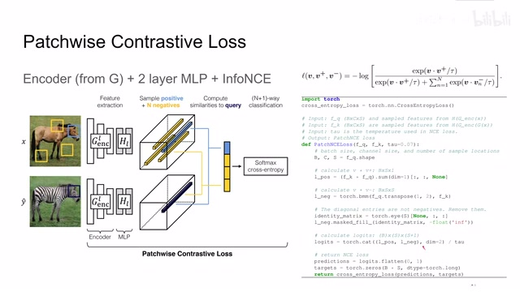
00:03:10–00:03:20 · 画面 00800:03:20–00:03:21 · 画面 009
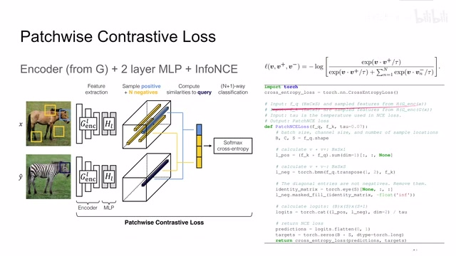
00:03:20–00:03:21 · 画面 00900:03:21–00:03:40 · 画面 010
00:03:21–00:03:40 · 画面 010也就是 number of sample locations 也就是我们采了多少个 patch 那么相似的呢我们的 key 呢是从输入的图像来先生成到 target domaintarget domain 呢然后放到我们的 generating encoder 里面再过我们的 mmlp 然后呢它也是一个同样的尺寸的形式这里这个 tower temperature 呢就是控制我们这个 InfoNCE 它的这个分布那么拿到这样一个形式的输入呢首先我们来计算它的 positive samples
00:03:40–00:03:41 · 画面 011
00:03:40–00:03:41 · 画面 01100:03:41–00:03:45 · 画面 012
00:03:41–00:03:45 · 画面 01200:03:45–00:03:46 · 画面 013
00:03:45–00:03:46 · 画面 01300:03:46–00:05:31 · 画面 014
00:03:46–00:05:31 · 画面 014可以看到这里作者意思是对应位置相乘然后呢沿着这个 channel 这个 dimension 也就是 mlp output 这个 vector 的 dimension 给它求和那其实就是两个向量给它求的内积嘛那这样子呢它应该变成一个 b 乘 s 的 tensor 然后呢再给它加上一个轴就是 b 乘 s 乘 1 那再看这个 negative samples 呢就是这个 query 给它转置然后乘上我们的 key 这个呢 bmm 表示是一个 batch 里面每一个 sample 它们自己做这个矩阵的乘法
这样每一个 sample 都能得到一个 s 乘 s 这样一个矩阵这样这个矩阵就表示这一个 sample 里面不同的 patch 它们之间的相关的相似程度那么因为有 big samples 所以是 b 乘 s 乘 s 这样一个结构那么如果我们观察这个矩阵我们发现这个矩阵它的对角线上的元素正好是相同位置上的 patch 它的 key 和 query 乘起来其实就是我们的 positive那么为了避免重复计算这里呢我们把对角线上的元素它的值呢给它写成负无穷这样子过一个指数之后呢这个地方的值呢就变成了 0 了那么最后呢把这个 positive 和 negative 串接起来带上我们的温度系数然后呢放到我们的 cross entropy loss 里面
因为我们的 positive sample 总是第一个所以我们就把所有的 label targets 都给它设置成 0 这样放在 cross entropy loss 里面就可以很轻松的计算出上面这个式子弹那么在我们刚刚最基础的设计之上这里作者还做出了一些改进让我们的整个的训练效果变得更好首先第一个改进是因为我们的 generator 的 encoder 它会有很多层我们在每一层都计算 NCE 这样子会得到一个更好的效果
00:05:31–00:05:42 · 画面 015
00:05:31–00:05:42 · 画面 01500:05:42–00:05:43 · 画面 016
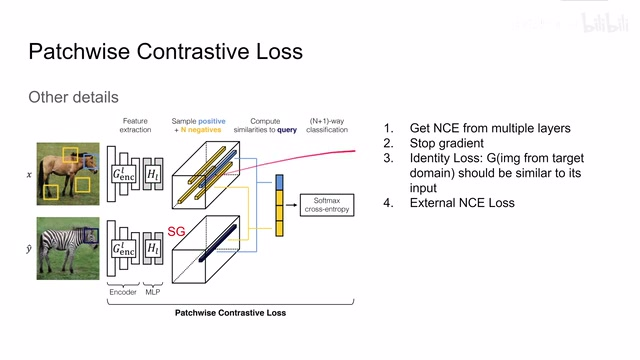
00:05:42–00:05:43 · 画面 01600:05:43–00:06:39 · 画面 017
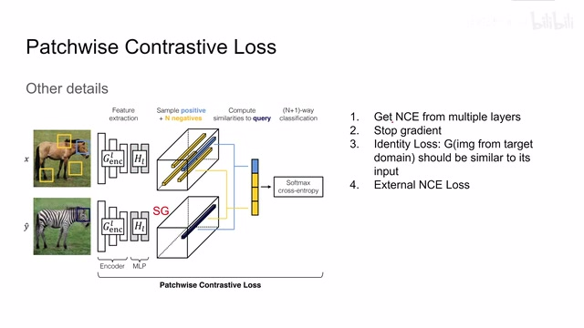
00:05:43–00:06:39 · 画面 017那么第二个需要注意的就是在这个地方我们计算 key 的时候要把 gradient 给它停掉那么这一点就非常像 Moco 的设计那么第三个是 identity lossidentity loss 的含义就是我假如说把 target domain 的一张图像放到我们的 generator 里面那么产生的图像应该又跟原始的图像很接近就是它既然已经是 target domain 了我们的 generator 就不应该再对这个图像做过多的修改那么你如果在 CycleGAN 里面呢这个 Identity loss 呢你比如说可以用 L1 或者是 L2 这样的 loss 呢去直接给它监督的学习出来但是呢那个监督其实是非常粗糙的它是从最终生成的图像一路向前传递传递出来的那么作者就想我们能不能把这个监督加的更加细致一点呢这里呢因为我们之前已经有了 NCE 而且在每层都计算这个 NCE loss 作者呢直接就把这个 X 换成了我们的 Y
00:06:39–00:06:40 · 画面 018
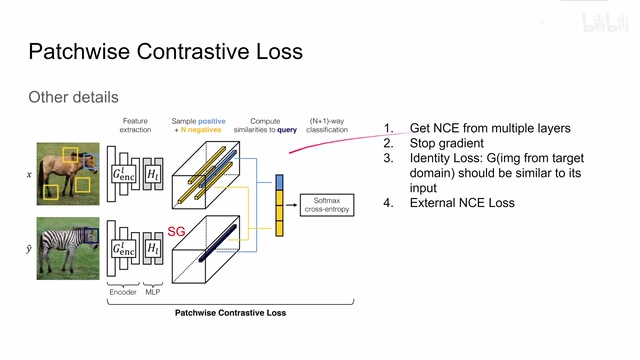
00:06:39–00:06:40 · 画面 01800:06:40–00:07:43 · 画面 019
00:06:40–00:07:43 · 画面 019用 y 生成的 y hat 来作为这个 InfoNCE 的两个输入然后呢通过计算 y 和 y hat 他们之间的 InfoNCE 来实现这个 identity loss 那其实你想在这个 nce loss 里面呢我们鼓励相同位置的图像他们是相似的靠近的不同位置的图像他们相互远离那那么 nce 这个 loss 呢其实就很好的符合了我们想把这两只图像他们尽量靠拢这样一个思想那除此之外呢这里作者还设计了一个 external NCE loss 也就是说我把其他图像也视为负样本这个呢就像 moco 里面的设计一样它有一个 query 我把其他图像过 encoder 产生的这些 key 呢都放到一个 queue 里面用这个大的队列呢和我们的这个 query 来做 contrastive learning 这样子呢我们有更多的 negative samples
好的那么说了这么多这个描述也比较抽象我们直接来看作者在代码中是怎么实现这样一个问题那么首先这里我们看到这是在计算 generator loss 这里我们要计算 real A 和 fake B 也就是 real A 经过 translation 之后得到的图像 fake B 它们两个之间的 NCE loss 这个就是最基础的 patchwise NCE loss 那么随后在有些实验条件下我们想计算这个 real B 也就是 target domain 的图像
00:07:43–00:09:36 · 画面 020
00:07:43–00:09:36 · 画面 020来送到 encoder 里面得到了 identity domain 的这个图像那么它俩之间的 info nce loss 这个呢就是我们之前说的这个 identity loss 那么随后我们来看拿到这两幅图像之后我们来怎么样计算它的 nce 吧这里呢我们看到拿到这个图像之后呢一个是 source 一个是 target 我们都把它放到这个 generator 的 encoder 里面那么 source 得到 feature 呢我们叫 feature query 这个 target 得到 feature 呢我们叫它 feature key
那 feature query 和 feature key 呢我们都送到这个 mlp 里面这个 mlp 呢会把我们的 feature 变成相应的 latent representation 把它们投射到同一个 latent space 里面那这里提一句呢这个 feature 呢它不是一层的 feature 它是应该包含你的 generate encoder 每一层的这么一个 feature 所以呢这应该是一个 tensor 列表那么然后呢正上午我们刚才说的我们想要计算每一层之间它们的 NCE loss
这里你看到作者开了一个循环我们把每一层之间的 NCE loss 计算出来乘上相应的系数然后加起来就可以了那么然后的问题就在于我们要怎么样计算这个 query 和 key 它们之间的 NCE loss 不过在此之前我们先要理清楚这个 feature key 它的 pool 和这个 feature query 它这个 pool 它们两个 tensor 它们的尺寸关系那么这要从我们怎么样产生这个 feature pool 来谈起了这里我们看到 netf 其实它的本质就是 patch-sample-f 当我们把一个 feature 送进来的时候我们告诉它我们想要在其中产生多少个 patch 然后我们就开始循环对于每一层的 feature 来说它的输入的形式就是 fit 应该是 batch-size 乘以 channel 的数量乘以 height 乘以 width 那么这里作者做了一个操作首先把宽和高它们捏到同一个 dimension 里面
00:09:36–00:10:16 · 画面 021
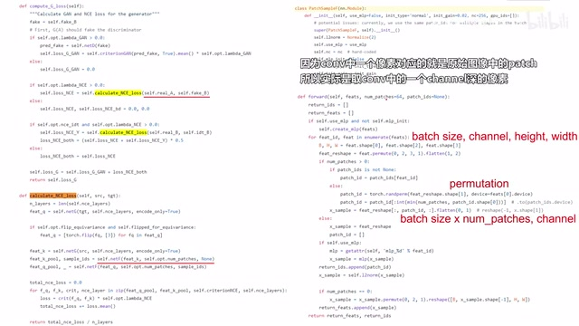
00:09:36–00:10:16 · 画面 021然后呢把这个宽乘高和这个 channel 交换一下位置然后呢这里有一个 permutation 交换一下这个 batch 中每一个 sample 的位置那么当然如果你在之前指定了 patch index 的话它会按照这个 index 来去给它交换这个顺序这个呢其实就是随机排序然后再取前比如说 64 个或者 256 个这样 sample 那么在取得了这些 sample 之后呢这里呢作者把它和 batch size 就捏了一下
00:10:16–00:10:50 · 画面 022
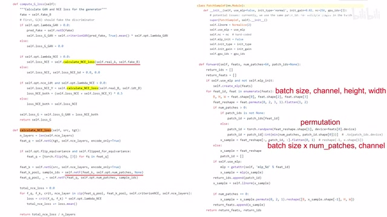
00:10:16–00:10:50 · 画面 022这样它的数量就是 batch size 乘以 number of patches 这个是第一个 dimension 的数量然后第二个 dimension 就是 channel 这里如果我们用 mlp 就把 channel 这个 dimension 送到 mlp 里面变成另一个长度为 channel 的 latent representation 最后你看到这里做了 normalization 然后把这一层的 feature 给它加回到原来的队列里面那么这个就是我们怎么样在一个 batch 中在 encoder 的每一层产生我们的 patch
那么有了 patch 之后呢我们来看怎么计算这个 NCE 啊那这里呢我们假设 batch size 呢是 b 这个 number of patches 呢它的数量是 s 然后呢 channel 呢我们有 sig 其实也就是 feature vector 它的长度那么一开始这个 tensor 呢是 b 乘以 s 然后 c 这么一个 size 给它扔到我们的 NCE 里面那么在 NCE 里面呢我们首先看到它对 key
00:10:50–00:12:38 · 画面 023
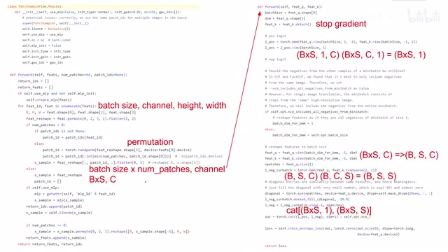
00:10:50–00:12:38 · 画面 023要 stop gradient 这里有一个 detach 那么如何计算我们的 positive samples 呢我们看到这一个 tensor 我们这里给它加一个维度这个呢我们是这里给它加一个维度这样子呢两个做矩阵乘法就很自然而然的把这每一个 sample 里面的 1 乘 c 的向量乘以这个 c 乘 1 的向量就得到一个值那么这个值呢就是我们 positive samples 它们的相似程度那么随后呢我们就应该计算这个 negative samples 它的这个相似程度了嘛我们看到这里我们需要选择是否使用这个 batch 中其他图像其他 samples 他们的这些 patch 来作为我们 negative samples 那如果我选择的话就是我在计算 InfoNCE 的时候 negative samples 不仅包含有我这个图像中产生的 patch 作为 negative samples 还包含这个 batch 中其他 samples 其他图像中产生的 patch 也作为我们的 negative samples
那么如果你不想使用其他图像产生的 negative samples 呢你在这里呢把它的值设置成 batch size 这样你看下面的操作首先呢我们输入的 tensor 是一个 b 乘 s 然后呢定一个 domain 是 c 这样一个 tensor 假如说我的这个 batch dimension for bmm 它这个值呢是等于 batch size 也就是 b 那么经过这样一个变形之后呢我们的 tensor 就变成了 b sc 这样一个 size 那同理呢这个 key 也是一样的
00:12:38–00:12:39 · 画面 024
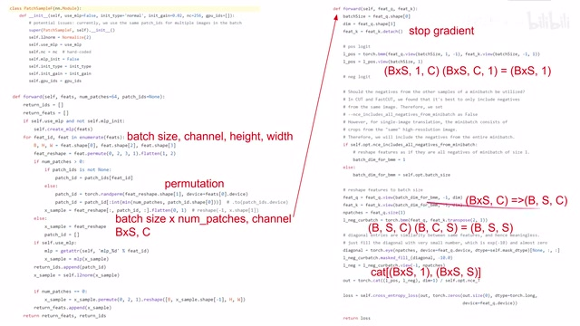
00:12:38–00:12:39 · 画面 02400:12:39–00:14:07 · 画面 025
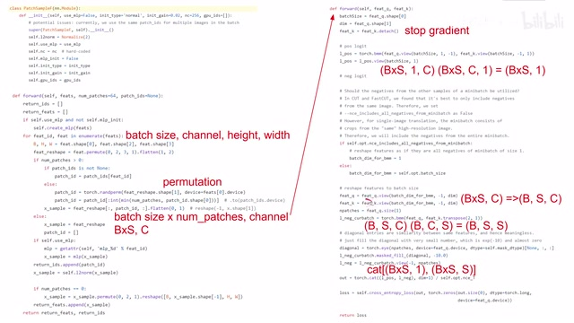
00:12:39–00:14:07 · 画面 025这个时候呢我们把这个 key 转置做这个 batch 乘法我们可以看到呢对于每一个 sample 来讲一个是 S 乘 C 的矩阵乘一个 C 乘 S 的矩阵那就得到一个 S 乘 S 的矩阵这个 S 乘 S 的矩阵呢就是就是这一个图像内每一个 patch 它们相互之间的相似的程度因为我们有 S 个 patch 嘛所以它是一个 S 乘 S 这么一个矩阵那你可能已经注意到啊这个 S 乘 S 的矩阵呢它的对角线上的元素呢其实就是相同位置的 patch 它的 key 和 query 它的成绩它呢就是我们的 positive samples 所以呢这里呢作者有一个 mask 把对角线上的元素呢全部给它设置成一个很小的值那么这样子呢我们在计算 ce loss 的时候呢就会很自然的把这一块重复计算的 positive samples 给它忽略掉那么最后呢这里作者还做了一个变形把这个 b s s 这样一个 tensor 变成了一个 b 乘 s s 这样一个 tensor
那么这样子呢我们把 Positive Sample 和 Negative Sample 串接起来再送到这个 Cross Entropy 里面就可以算出我们的这个 InfoNCE loss 了那你可以再体会一下为什么这种设计能够保证我们的 Patch 始终是跟同一个 Sample 同一个 Image 里面的这些 Patch 相互比较那么如果你想清楚了这个你再想如果我想包括其他的图像其他的 Sample 它其中的 Negative Patches那么我为什么要把这里设置成 1 那么以上呢就是边圈乐闻这个代码里面最核心的实现在此基础上呢毕竟我们这是一个 GAN 嘛当然还有一个 GAN loss 这呢作为使用了我们熟悉的 BCE 当然你用 MSE 呢也是可以的最后呢我们整个 loss 呢就是一个 GAN loss 加上 PatchNCE 再加上这个 Identity loss 就是用 target domain 的图像作为 generator 的输入产生那么一个图像来做的这个 PatchNCE
00:14:07–00:14:17 · 画面 026
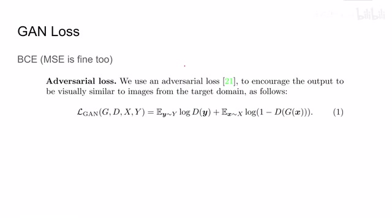
00:14:07–00:14:17 · 画面 02600:14:17–00:14:50 · 画面 027
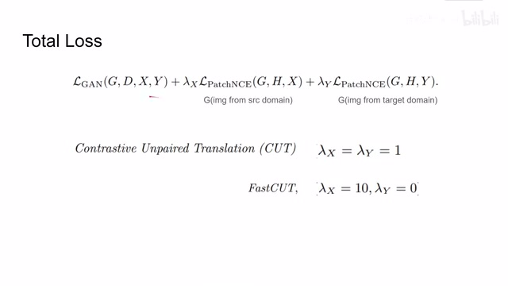
00:14:17–00:14:50 · 画面 027那么这里作者提出了两种基础的构型一种就是默认的 Contrastive Unpaired Translation 它这里是两个 Loss 都存在的那么另一种是 FastCut 另一种是 FastCutFastCut 就是只保留了 PatchNCE 去掉了 IdentityLoss 那么我们直接来看作者回报的结果吧
00:14:50–00:15:37 · 画面 028
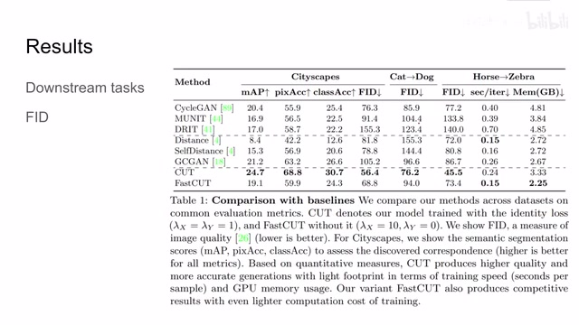
00:14:50–00:15:37 · 画面 028这里我们看到有不同的数据集作者主要评估的是下游任务还有 FID 下游任务的好理解就是我拿我生成的图像去做图像的分类物品的识别那么它的成功率越高说明我们的图像生成的就越真实那么这个 FID 是一种 Distance 就是我们在 Latent Space 里面我们 Target Domain 图像的分布跟我们产生的这些图像它们的分布它们之间的距离显然如果这两个距离之间越近那么肯定是我们的图像越真实可以看到本文提出的 Cut 是 outperform 之前的其他的方法但是这个训练起来还有这样的内存相对比这些方法要大一些不要紧作者说我们用 FastCut 它的性能虽然说不是最好的但也是一个可以看的水平那么此外作者还做了非常有意义的 Ablation 这里我们看到是默认的配置 ID 代表 IdentityLoss 就是我们 LambdaY 控制的那一项这个是 NegativeSamples 的数量
00:15:37–00:16:10 · 画面 029
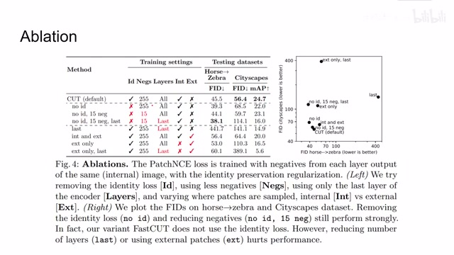
00:15:37–00:16:10 · 画面 029我们在哪些层计算这个 InfoNCE 那显然是所有层都计算的效果最好这两个呢是我们使用同一张图像产生的 negative sample 还是说使用其他的图像产生的 negative sample 可以看到呢这个是默认的配置那其他呢还有这些的配置那大家可以在这个表格中呢查看它们具体的性能那么在这张图里呢作者也对比了训练的稳定性可以看到呢虽然取掉了 identity loss 呢它的性能呢比我们默认的性能要好
00:16:10–00:16:22 · 画面 030
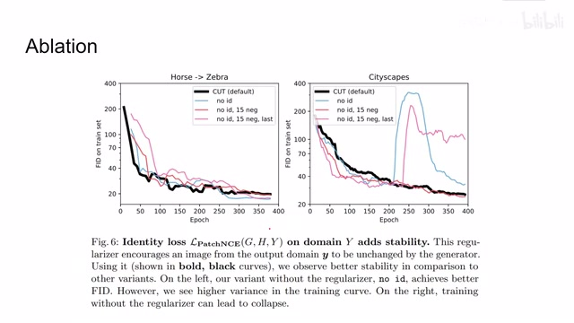
00:16:10–00:16:22 · 画面 030但是它会导致我们的训练在某些情况下不是那么稳定那么最后作者展示了一些结果本文方法是 outperform 之前的这些方法当然还有一些失败的 case 就是网络把这些背景也认成了我们的主体的语义信息而这边是不同的 application 产生的 visualization
00:16:22–00:17:20 · 画面 031
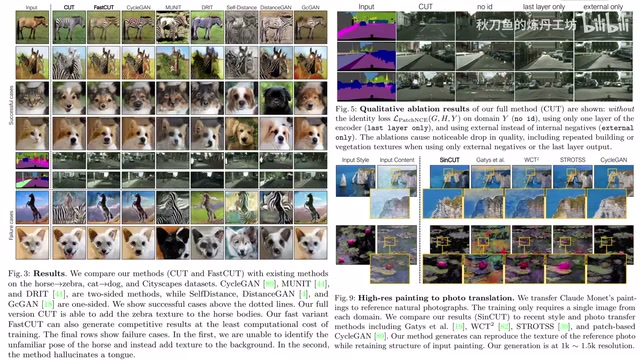
00:16:22–00:17:20 · 画面 031那么总的来说呢本文的核心的贡献呢就是把这个 contrastive loss 加到我们 GAN 的这个训练的过程中而且呢是在 generator 的每一层里面都加了这个 InfoNCE loss 这样子呢帮助我们的 generator 更好的改善了它局部的性能那么正如我们之前提到的本文呢还探讨了一些像 target 图像很少的这样的一些情况那最此呢还做着设计了不同的变体那么感兴趣的朋友呢你可以详细的去查看论文的原文包括它实际的代码，特别是 NCE loss 这块的计算。那么我们一切还是都是以它实际的代码为准，好的。那么以上就是我对这篇论文的简单的分析，那么感谢您的收看，再见。
00:17:20–00:17:20 · 画面 032
00:17:20–00:17:20 · 画面 032转写与来源说明 · 0 个自动复核提示
保留 39 个原始语音片段，0 个片段触发自动复核提示。提示仅用于定位可能的术语、重复或识别问题，不等于已确认错误。
讲解画面为源视频截图（640×360），不是可编辑 PPT 文件。全片按每秒 2 帧扫描内容变化，逐步展开页保留；连续动画保留代表画面。清晰度受源视频限制。
原视频：paper/合集_2026-10-16_内容生成/[论文简析]Contrastive Learning for Unpaired Image-to-Image Translation[2007.15651].mp4
SHA-256：a6460b4063b42f1667f33f9c84b9c1596ddb2a1028c3bad125090fb9c2ad6802
全文按视频语音与画面制作。原论文可从上方链接下载；完整资料包保留全文、原始逐字稿、字幕和校对记录。